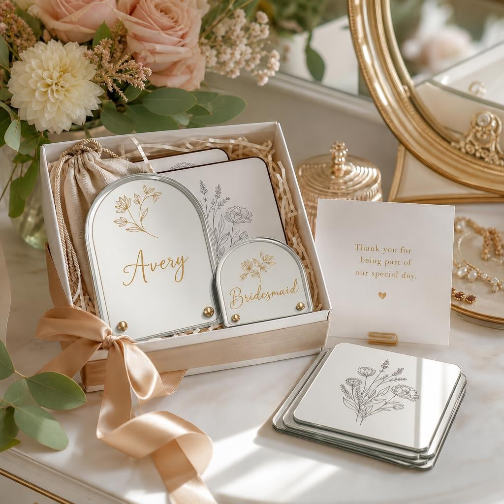
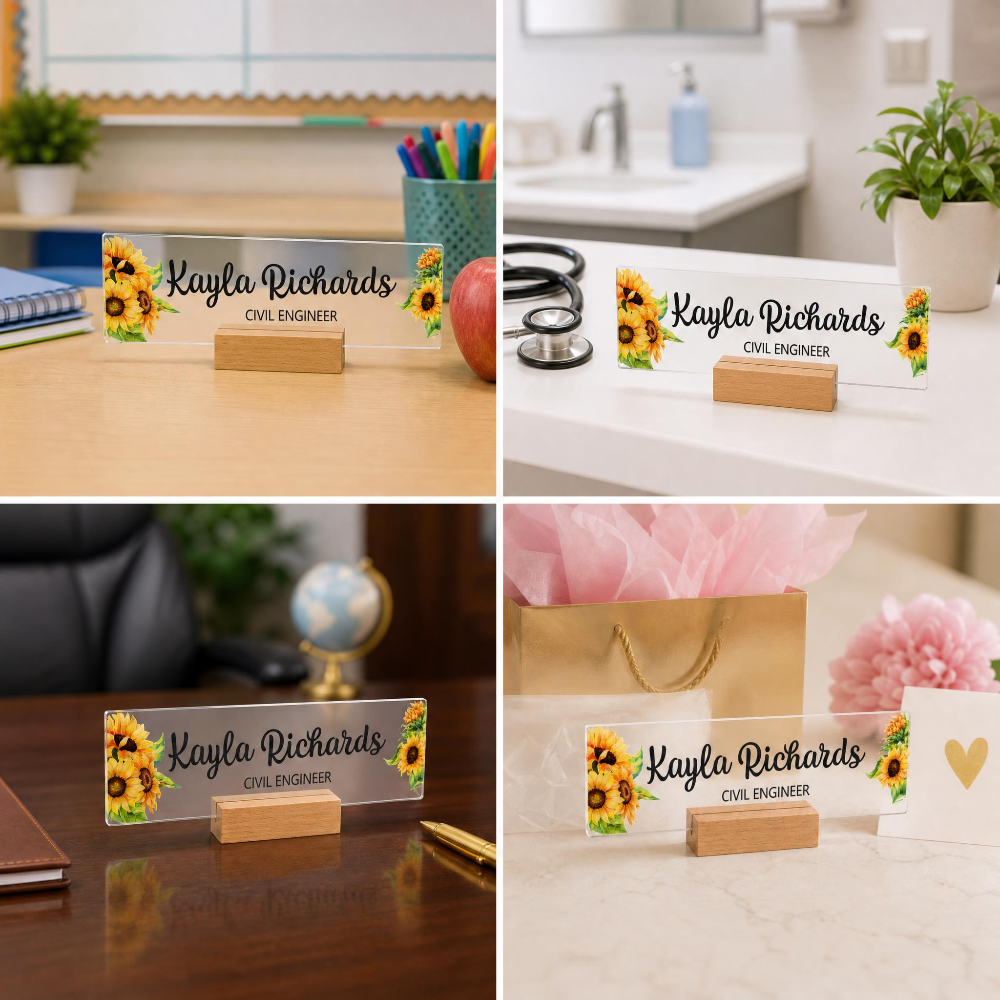
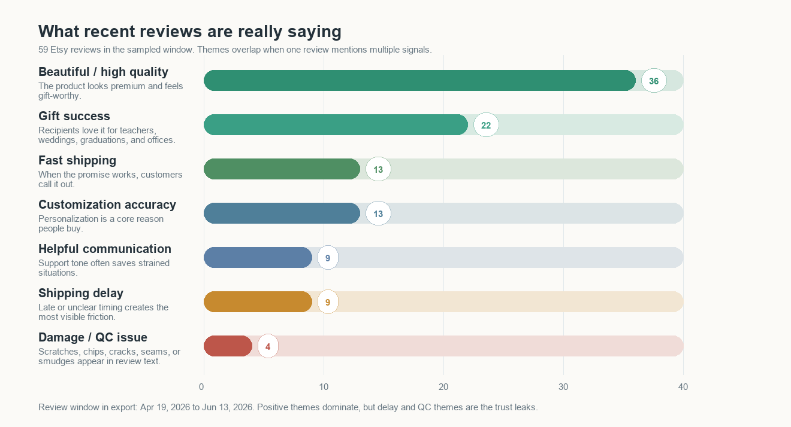
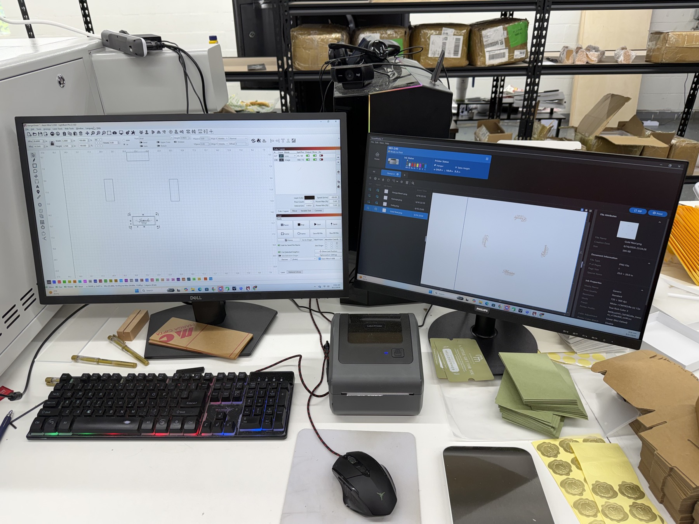
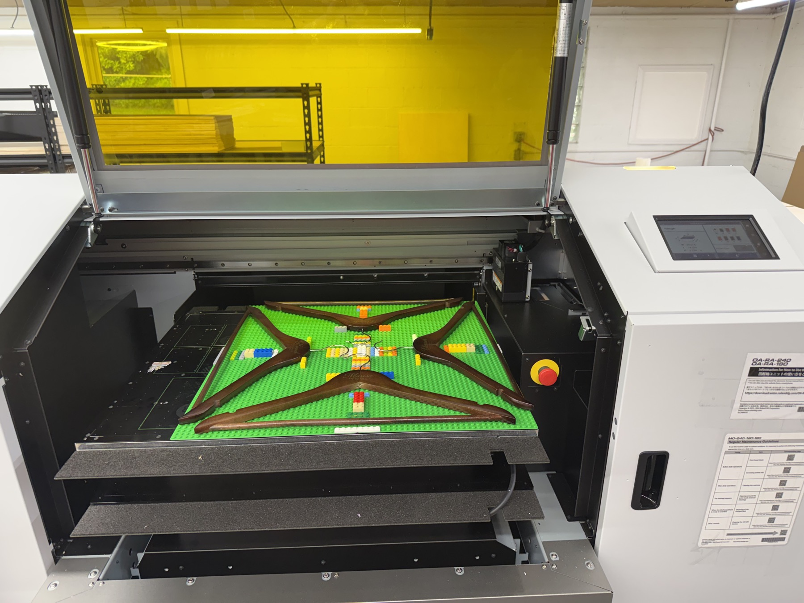
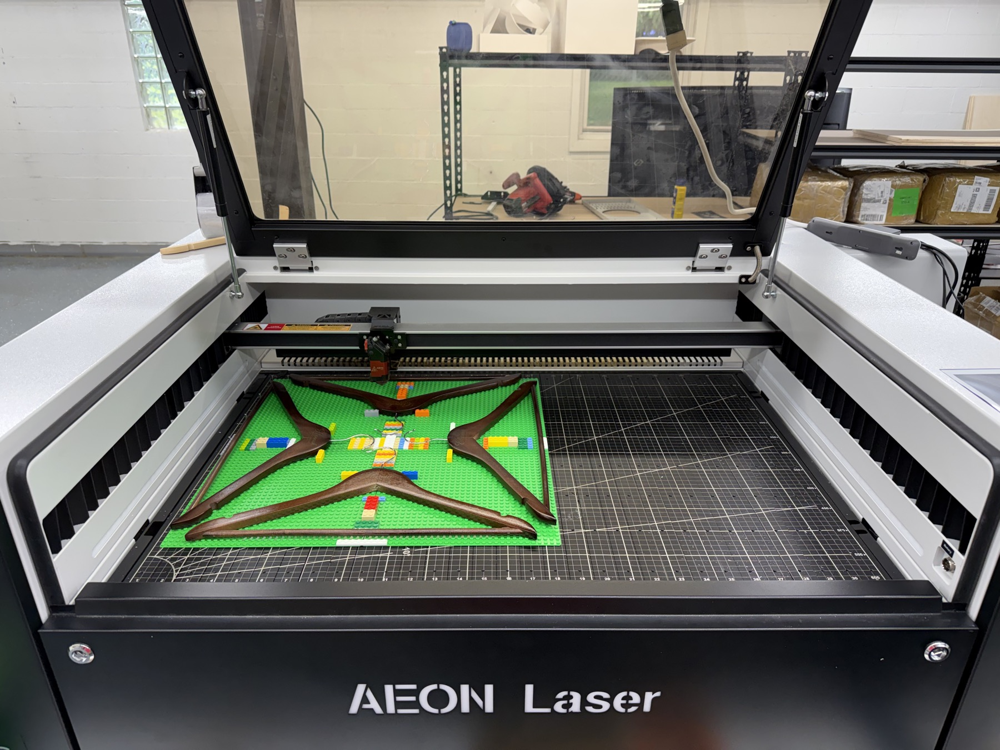
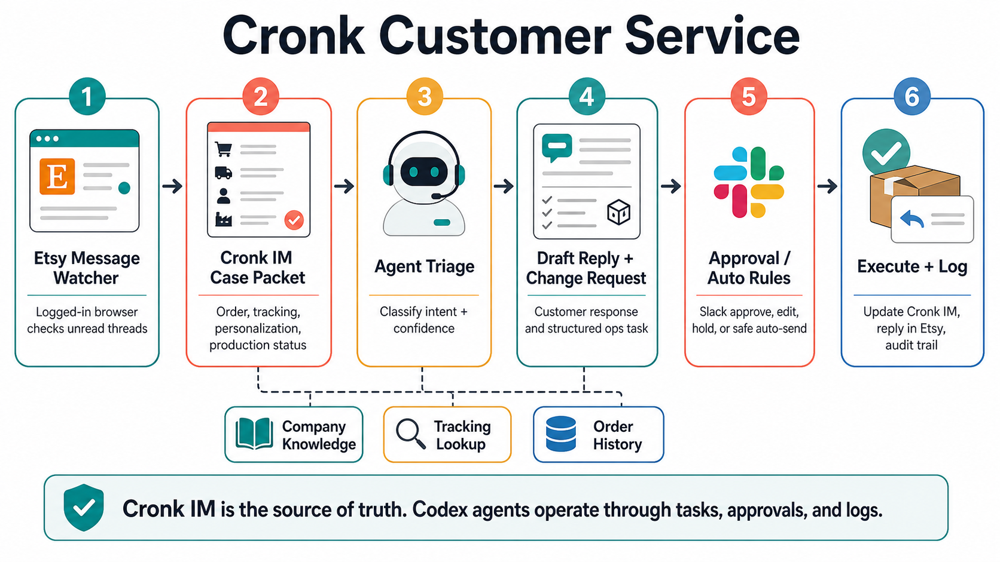
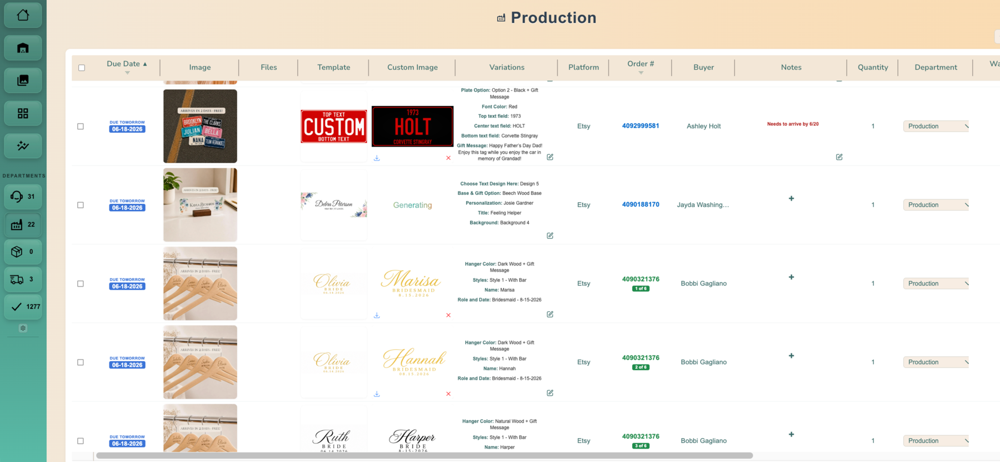

MyMaravia, where we close the loop from buyer intent to customer service, production, shipping, and feedback.
Alternative proof draft | June 2026
Cronk / MyMaravia: The Tokenification Of Everything
Product discovery and distribution have been solved. Product creation is the new frontier.
Every product surface, buyer moment, image, listing, order update, and customer interaction can become addressable.
MyMaravia: A custom product. A custom experience.
The opening
The map is cheaper than the fleet.
Hi everyone,
Columbus is usually taught as a story about exploration. The more useful business lesson is that exploration was rarely funded for exploration's sake. Monarchs, trading houses, and people with much larger balance sheets funded voyages because they needed better information before committing ships, soldiers, trade routes, and capital.
A scouting voyage could look expensive on its own. But compared with sending the royal fleet in the wrong direction, it was one of the cheapest ways to turn uncertainty into leverage. The value was not only in reaching land. The value was in bringing back a map that could tell the larger system where to move.
I am not using that era as a moral model. I am using it as an operating analogy. When the fleet is expensive, the map matters.
Cronk started with a problem I already had at MayberryCorner: how to make personalized products easier to discover, create, route, and fulfill. MyMaravia is the scout ship now. It is where we can work through the whole custom-product loop in one real operating environment: demand research, listing generation, image creation, customer service, production routing, order status, packaging, and shipping.
That does not mean the whole loop is already fully automated. It means we finally have the live surface where automation can become practical. Every support message, production constraint, proofing decision, machine setting, and shipment gives Cronk context it can pull in, turn into the next instruction, and push back into the system.
Over the last couple of weeks, the shape of the opportunity has changed. We went looking for a better way to build our own shop, and we found what looks like a vein of gold: not just one product opportunity, but a repeatable way to build customized products and customized experiences with more of the work handled by software over time.
The question now is not only whether MyMaravia can become a good shop. I think it can. The bigger question is whether we should spend all of our limited resources mining that first vein ourselves, or use MyMaravia to keep scouting, improve the map, and sell that map to the larger fleet. That could mean selling into those platforms, partnering with them, or eventually being acquired by a company with much more ability to use the map and mine the gold.
Those fleets are the platforms and operators with enormous distribution: Amazon, Meta, Google, Etsy, Shopify, big retailers, and made-to-order businesses that already have capital, traffic, customers, and existing commerce systems. If our map is real, Cronk can help them steer that distribution toward the right buyer moments, product surfaces, and production contexts.
This update is the evidence. You should read it with the right skepticism. It may be fool's gold. But if what we have found is real, the valuable thing is not only the gold in front of us. It is the map showing how to find, create, route, and fulfill more of it.
With that preamble, here is what I think we found.
Cronk's push-and-pull context system: demand signals, listings, images, SKUs, support, machine context, and order state.
Platforms and operators with distribution, capital, traffic, existing commerce systems, and more ability to mine the map.
What we know right now
AI-generated listings are already selling.
The first proof point is not theoretical. We can put a product surface into the market before the final staged photo set exists, and Etsy will tell us whether buyers actually want it.
These are not eRank estimates or public marketplace guesses. They are MyMaravia Etsy transactions, aggregated at the listing level through the Etsy API for a 31-calendar-day window: May 18-June 17, 2026 UTC.
The operating lesson is narrower than the big vision, but important: buyer-intent research plus AI-generated listing imagery can turn into paid orders inside a real personalized-products shop. None of this removes the hard work of production, quality control, refunds, routing, or customer service. It proves that the first demand surface can be created faster than the old product-development loop.
In these tests, the listing surface was built from competitor demand research, buyer-moment context, and ImageGen 2.0-style mockups before the final staged photography existed. The products then earned enough real demand to justify deeper production work.

Etsy listing 4510812143
Personalized bridesmaid hanger
167 units
159 transactions
$3,792 gross
31 days: May 18-Jun 17, 2026 UTC
Bridal-party gifting was the buyer moment. The listing changed the image, title, and promise around that moment instead of asking one generic hanger listing to serve every wedding search.

Etsy listing 4510883619
Dark wood bride hanger
164 units
155 transactions
$4,089 gross
31 days: May 18-Jun 17, 2026 UTC
Same production lane, different surface. The buyer sees a more specific bridal use case, while the business keeps the underlying product grammar close to the first hanger test.

Etsy listing 4498936138
LED teacher desk nameplate
158 units
158 transactions
$13,460 gross
31 days: May 18-Jun 17, 2026 UTC
This is the Demand Engine lesson in miniature: the product is the vehicle, but the buyer intent is the market. Teacher appreciation created the demand surface.
Demand engine proof
From market signal to orders in four days.
A useful recent example is the personalized dad car visor photo clip. Etsy already concentrated the search intent; the work was product creation. Cronk Research surfaced the Father's Day buyer moment, MyMaravia stood up the matching product surface, and the first backend orders came in fast enough to show the loop is becoming operational.
Cronk Research had already surfaced the pattern: this was not just a generic acrylic photo product. It was a Father's Day and "drive safe" buyer moment, with demand clustering before the holiday and enough public review activity to justify a fast build.
The strongest public comparator we found was HoneyCustom's dad car visor listing. In the Cronk Research review rollup, that listing showed 762 review rows in the last 365 days and 154 in the last 90 days, with a clear spring-to-Father's-Day ramp. Reviews are not sales, and they lag the purchase date, but they are the best public listing-level signal we can scrape because competitor order totals are not reliably exposed on individual Etsy listings.
MyMaravia then launched a matching product surface: a personalized dad car visor photo clip, listing 4514808910. I am using June 12 as the real start of the test because that is when we actually started selling it in earnest. From June 12 through June 16, the listing generated 81 orders and 89 units, even though we could not keep it live the whole time. My read is that we would have taken more orders if inventory had kept up.
Cronk Research review rollup
52-week review signal: HoneyCustom dad car visor clip
MyMaravia backend snapshot
Our orders by day
 Personalized Dad Car Visor Photo Clip
MyMaravia listing 4514808910
Personalized Dad Car Visor Photo Clip
MyMaravia listing 4514808910
What happened
We did not leave the listing up continuously because the constraint became inventory, not demand. Once it started moving, customers were buying faster than we could source enough local Amazon inventory, so we had to take the listing down and pull back availability while we caught up. The important takeaway is that the 81 orders were supply-capped, and the 19.7 orders/day number is a calendar-window read, not the true live-hour rate.
The thesis
Personalization is moving beyond the product.
That is why the Dadvisor proof matters. Dadvisor is not the whole category; it is a long-tail byproduct of a bigger category and production method: customized acrylic. Once we can reliably make personalized acrylic photo products, the same production base can become a visor clip, a magnet, a keepsake, a nameplate, a desk sign, or another surface built for a specific buyer moment.
The broader thesis is that demand for a product is not fixed to one listing, one image, or one buyer. The same underlying capability can reach a larger audience when its surface changes: the title, image, buyer moment, customization path, production promise, and customer context.
That matters because the long tail is usually too expensive to serve. Each audience can be small on its own, so traditional product development treats most of those pockets as not worth the work. The new thing is that the long tail can have its own long tail. Even inside a niche product, we can niche down again for a specific demographic by changing the hero scene, style layer, offer, title, tags, product grammar, personalization path, and follow-on feed without rebuilding the production base.
In that model, scale does not only come from selling one generic SKU to more people. It can also come from keeping the product grammar and production process consistent while making the customer-facing surface specific. What used to require another photo shoot, listing rewrite, merchandising pass, and operating setup can increasingly be generated or adapted by models. The marginal cost is not zero for production, inventory, shipping, or support, but the marginal digital cost of changing the surface is approaching zero. That is the unlock: the same production grammar can be tested across many small pockets of demand.
That is what I mean by "the tokenification of everything": every buyer moment, product surface, design variation, staged environment, customization choice, order state, and channel surface becomes an addressable unit that can be measured, customized, routed, and improved.
The operating model
The customization stack: every surface can become addressable.
The first version is not one giant platform. It is one niche product being niched down again. The product is a mirror favor, but the addressable surface changes through product grammar, hero scene, title, tags, style layer, offer, order experience, feedback, and feed routing. Models make most of those surface changes cheap to generate and cheap to test; production context makes them fulfillable.
Target demographic
22-year-old engaged woman shopping wedding favors
Planning a fall garden wedding; browsing Etsy, TikTok, and Pinterest; comparing bridal-party gifts that feel personal, photo-ready, and fast to ship.
Minimal gold script
Garden florals
Champagne robes
Bridesmaid bundles
Soft anime floral nod
Budget-conscious
The product is routed into a wedding-morning moment instead of a generic gift category.
Cronk can reuse the structure across bride, bridesmaid, maid of honor, flower girl, and reception-gift variants.
The listing language changes around the buyer's shopping route, not only the physical object.
The listing can collect the exact fields needed to render, proof, produce, package, and route the order.
Enjoy Free 2-Day Shipping on Everything - SHOP NOW
My Maravia
Search wedding gifts...

Arrives in 2 days - free
Choose a gift to start customizing
Personalized Wedding Morning Mirror Gift Set, Custom Bridesmaid Mirror Favor, Garden Bridal Party Keepsake
From $24.00
Easy customization
Printed/engraved today
Free 2-day shipping
Customize your product
Edit deterministically
Use AI style assist
Feed route: engaged shopper -> bridal-party bundles -> reception keepsakes
Production route: glass/mirror engraving -> gift packaging -> 2-day delivery
The image makes the buyer recognize her wedding morning before reading the description.
The same product can be restaged for modern, rustic, shabby-chic, anime-inspired, or black-tie tastes.
Price, bundle size, sale framing, shipping promise, and gift message become testable surfaces.
The listing teaches the feed which adjacent products should appear next.
Search surface
Title, tags, keywords, category.
Visual surface
Hero image, staging, style, color story.
Commerce surface
Offer, bundle, rush promise, gift message.
Learning surface
Customization choices, prompts, reviews, next click.
Concept mockup: custom generated MyMaravia-style mirror/glass product image and storefront layout based on the live MyMaravia.com formatting checked June 15, 2026, with the product image edited June 17, 2026. The product, title, price, fields, and routing are illustrative examples for the target buyer persona.
Layer one
Customizing time
A teacher appreciation gift is not just a product. It is a moment. A graduation gift, a new doctor gift, a boss promotion gift, a Father's Day gift, and a back-to-school classroom gift each have different timing, language, and visual expectations.
Cronk Research turns those signals into an annual buyer-moment calendar, then lets us drill into the products already winning inside a specific window before we commit capital and production time.
Buyer moment calendar
Time-specific Cronk Research windows
Open dashboard
12
visible seasonal windows
780
buyer moments cataloged
60.6M
visible demand volume
Working slice
These are the windows in view right now. The catalog keeps going.
Birthday
Housewarming
New baby
Retirement
Pet memorial
Wedding party
+768 more
Valentine's DayJan 20-Feb 20
4.7Mdemand
EasterMar 1-Apr 20
2.4Mdemand
Admin DayApr 1-Apr 30
229Kdemand
Teacher AppreciationApr 15-May 20
2.9Mdemand
Mother's DayApr 15-May 25
14.6Mdemand
GraduationApr 15-Jun 20
2.5Mdemand
Father's DayJun 1-Jun 30
9.5Mdemand
Back To SchoolJul 15-Sep 10
1.7Mdemand
HalloweenSep 15-Oct 31
3.2Mdemand
Boss DayOct 1-Oct 20
340Kdemand
ThanksgivingOct 20-Nov 30
1.1Mdemand
Christmas / HolidayNov 10-Dec 31
17.5Mdemand
Drill-down
Father's Day: Jun 1-Jun 30
Cronk maps the seasonal window, ranks the winning product shapes, then lets MyMaravia build into the pull.
Score key
The 0-100 score blends demand volume, review velocity, engagement, shop strength, buyer-moment fit, product-category fit, and MyMaravia build fit. Higher scores mean stronger near-term test candidates. For competitor listings, review velocity matters because public Etsy surfaces we can scrape do not expose listing-level order counts reliably.
Actual MyMaravia proof, summarized
Cronk found the Father's Day car-gift pocket. Dadvisor sold through it.
This is the same operating proof shown above, repeated here only to connect the Father's Day calendar to the actual product response. The takeaway is not just that Dadvisor sold. It is that Cronk found a timed buyer moment, MyMaravia built into it, and demand outran the local inventory plan.
81actual orders
89actual units
$1.32Kproduct revenue
19.7/daycalendar-window velocity
Cronk marks Father's Day window
Operating launch Jun 12
Jun 14 peak: 35 orders / 40 units
Jun 15: availability constrained
MyMaravia Etsy proof
Personalized Dad Car Visor Photo Clip
Actual shop transactions
Actual Etsy transaction snapshot: 81 orders and 89 units from Jun 12-Jun 16, with about $1.32K of product revenue. This is backend order truth, separate from public marketplace intelligence.

Top market pull
Fist bump dad-and-kids framed sign
Score 81.9
Est. 222 recent 30D sales; 286K demand volume on the gift-from-kids keyword.

Popular keepsake
"Moment You Became My Daddy" photo keyring
Score 78.6
Est. 201 recent 30D sales; 117 reviews in 90D; 1.8M Father’s Day demand volume.

BBQ gift pocket
Personalized Dad's grilling plate
Score 75.2
Est. 197 recent 30D sales; customized with kids names; same gift-from-kids demand pocket.

Apparel pocket
Custom Dad hat with kids names
Score 68.7
Est. 176 recent 30D sales; gift-from-kids search intent, but a weaker production fit for MyMaravia.

Product adjacency
Personalized baby-face acrylic magnet
Score 74.0
Est. 150 recent 30D sales; photo-based acrylic keepsake adjacent to our visor-clip production path.

Same product family
Competitor 1st Father's Day car visor clip
Score 75.5
Est. 137 recent 30D sales; 272K daddy-gift demand volume; validates the visor clip category.
Source: Cronk Research buyer-moment listing matches generated June 14, 2026; private MyMaravia Etsy transaction snapshot for listing 4514808910 through June 16, 2026. Dadvisor proof uses June 12 as the operating listing creation / real selling start, excludes one earlier Jun 6 transaction, and reports product revenue before shipping, tax, refunds, and marketplace fees. Listing-state observations show the listing active on Jun 12 at 11:32 PM ET and leaving the active/draft snapshot on Jun 15 at 11:33 PM ET; these are snapshot observation times, not exact storefront downtime intervals. Market demand volumes are directional search/result counts from the buyer-moment payload. Reviews are used as the best scrapeable listing-level proxy because public Etsy surfaces do not expose competitor order counts reliably.
Layer two
Customizing the product surface
The nameplate is not just a listing. It is a productized surface: clear acrylic, base, repeatable production process, personalized design area, and a SKU mapping that can serve many buyer moments.
Once the substrate is productized, the creative layer can move much faster.

Layer three
Customizing the scene
The product is only part of what the buyer is buying. A classroom, medical office, executive desk, graduation table, wedding prep room, or home office changes what the product means.
The scene is not decoration. The scene is targeting.

Layer four
Customizing the order experience
Custom products are often gifts, so the arrival date matters. But before the first UPS, FedEx, or USPS scan, the customer is really asking a simpler question: is my order moving?
Cronk can turn the hidden production path into visible progress: personalization parsed, proof prepared, production routed, QC passed, packaging, label, and carrier handoff. Each step is a small reassurance hit. The product feels more valuable because the work is visible, and the deadline feels safer because the order is moving through a known system.
That only works if Cronk understands the order's real state: SKU, file, owner, department, ETA, and exceptions. Production context becomes the customer-facing experience.
Secure MyMaravia order link
Order MM-10482
Packaging now
Current Cronk state
Packaging inspection
Started Jun 14, 4:35 PM ET. Projected next step: shipping label by 5:15 PM ET.
Order received
Jun 14, 9:14 AM
Personalization parsed
9:18 AM
Customer service review
9:42 AM
Proof / render prepared
11:08 AM
Production routed
1:20 PM
Production complete
4:12 PM
QC passed
4:28 PM
Packaging
In progress
Label created
ETA 5:15 PM
Carrier handoff
ETA 6:00 PM
Delivered
Carrier tracking
Layer five
The algorithmic feed
This layer already exists at massive scale. Amazon, Meta, Google, Etsy, Shopify, retailers, and ad networks have the attention surface area and the signal that comes from searches, impressions, clicks, carts, purchases, and returns.
That is not the layer we need to recreate first. Cronk's job is to build the map: which product surface, staged image, listing title, offer, and production route should be shown to a specific buyer type.
For the wedding shopper, the goal is not to own the whole fleet. It is to give ad networks, marketplaces, and Amazon-scale operators better targeting context so their existing feed can steer toward the right buyer moment.
Buyer moment
Wedding planning, bridal party, reception, keepsake.
Product grammar
Wood hanger, name/date field, role, finish, staging, shipping promise.
Feed decision
Promote the product set most likely to match this buyer's moment, style, and next need.
Bridal party
Guest favors
Reception details
Couple keepsakes
Newlywed add-ons

Bridal party gift
Personalized Bridesmaid Hanger
Stage: champagne robes, dress rack, getting-ready suite.
Promote for: bridesmaid proposal boxes and photo-ready wedding prep.

Bride detail
Dark Wood Bride Hanger
Stage: gown close-up, walnut finish, wedding morning.
Promote for: the bride's own getting-ready detail.

Wedding party gift
Personalized Groomsmen Hanger
Stage: suits, best-man set, matching party bundle.
Promote for: a matching groom-side bundle.

Personalized keepsake
Bride Hanger With Name And Date
Stage: flat-lay invitation, veil, name-and-date detail.
Promote for: a date-marked keepsake from the wedding morning.

Junior bridal party
Flower Girl Hanger
Stage: small dress, blush ribbon, junior bridal party.
Promote for: matching the smallest wedding-party role.

Ceremony detail
Ring Bearer Hanger
Stage: tiny suit, ring box, family ceremony role.
Promote for: completing the child-attendant set.

Reception add-on
Engraved Leather Coasters
Stage: cocktail table, favor display, newlywed initials.
Promote for: table favors and newlywed initials.

Couple keepsake
Personalized Song Plaque
Stage: sweetheart table, first-dance song, photo memory.
Promote for: first-dance memory and newlywed gift path.
Product examples use MyMaravia wedding-adjacent listing rows and route-next product concepts from the Cronk Research payload generated June 14, 2026. This graphic shows promotion candidates for the target persona.
The model curve
Every model improvement expands the surface area Cronk can target.
We should use frontier models where they matter, but the business should not depend on premium image tokens staying scarce. As image, video, and reasoning models improve, more surfaces become cheap to create, test, route, and personalize: names, fonts, scenes, offers, product angles, listing images, customer proofs, and eventually richer post-purchase experiences.
Cost curve
Same simple ecommerce image work is moving from paid creative token to commodity compute.
The right comparison is not "can AI make a beautiful image?" It is "what does a repeatable SKU-safe render cost once the product surface, prompt, brand rules, and QA loop are already known?"
Complexity frontier
What is commodity now, what is hybrid, and what still needs frontier models?
Level
Personalization task
2025
Now
Expected commodity window
01
One-line text swapChange "Jessica" to "Avery" in a locked font box.
Template-led
Commodity
Sub-cent to cents now
02
Two-line personalizationName + role, date, team, clinic, classroom, or gift message.
Manual QA
Commodity
Now to 6 months
03
Font, color, and simple graphicsMinimal, floral, sports, pet, teacher, or wedding styling.
Mostly manual
Mostly commodity
Cents now; cheaper in 0-6 months
04
Scene swap around known productSame nameplate on a dental desk, teacher desk, dorm, or wedding table.
Frontier / studio
Hybrid
Cents to dimes now; 6-12 months
05
Reference-aware product editPreserve the exact acrylic, wood, shadow, size, and cut path.
Frontier
Hybrid
Dimes now; 12-18 months
06
Full Etsy listing image setHero, lifestyle, detail, personalization proof, and scale image.
Designer workflow
Hybrid
Cents to dollars per set; 12-24 months
07
Buyer-moment catalog generationHundreds of seasonal variants mapped to tags, titles, SKUs, and production paths.
Mostly custom
Workflow moat
Model cost falls; workflow matters
08
Short product video5-10 second listing clip with motion, personalization, and clean brand staging.
Expensive / slow
Frontier priced
~$0.10-$0.75/sec now; 18-36 months
09
Influencer or avatar adPerson holding the product, voiceover, CTA, likeness controls, and product truth.
Agency / frontier
Frontier priced
24-48+ months
10
Long multi-shot video30-90 second campaign with multiple scenes, audio, actor continuity, and product closeups.
Production shoot
Directed workflow
36+ months
My expectation is that over the next 12 to 24 months, high-quality image generation for basic ecommerce personalization will increasingly look like commodity infrastructure. Frontier models will still matter for exploration, hard edits, multi-scene creative, video, and new forms of agentic commerce. But common name, font, style, product, scene, proof, and offer variations should keep moving toward cheaper open models, distilled models, local GPUs, and deterministic template layers.
That makes Cronk more valuable, not less. Better models expand our market because they expand what can be customized across buyer moment, demographic, product surface, scene, style, offer, channel, order state, and support context. The scarce layer becomes the push-and-pull infrastructure around the model: knowing what to generate, where to deploy it, which signal pulled it into existence, how it maps to a SKU, how the customer customization should be locked, how the production file should be routed, and how to know whether the output is safe to show a customer.
That is the image-generation cost curve in practical terms: use frontier models for hard creative exploration, then move repeatable name, font, product, proof, and scene work toward open models, local models, and deterministic template layers as the technology gets cheaper.
In that world, production context compounds. Every model improvement gives Cronk more useful surfaces to create, but the value still comes from connecting those surfaces to real production workflows, customer promises, and feedback loops.
Closing the improvement loop
Reviews and customer messages become process intelligence.
The customer-signal report is useful because it is direct. Here is what customers are saying, where the process is leaking trust, and what should change in production, proofing, packaging, shipping promises, and remake handling.
Open the customer signal report PDF
59
recent Etsy reviews analyzed
40
recent message/help rows inspected
93%
five-star rate in the review sample
5
operating initiatives pulled from the signals
What customers are saying
- 36 recent reviews mention beauty, quality, craftsmanship, or premium feel.
- 22 reviews position the product as a successful gift moment.
- 9 reviews still mention shipping delay, delivery promise friction, or arrival anxiety.
- Message/help clusters show repeat questions around proofing, instruction fidelity, QC, replacements, and tracking.
Company context loop
Signals come from multiple layers of the business, not one dashboard.
Etsy API reviews
Etsy messages
Cronk order context
SKU and product files
Production and remake notes
Shipping and tracking state
Cronk Research timing data
Customer-service outcomes
Customization as first-party context
The buyer teaches the system while building the product.
When someone customizes a product, they are not only filling out an order form. They are revealing style, intent, recipient, urgency, occasion, and taste. Cronk can store the non-sensitive design context as product and feed signals, then use that context to route better products, scenes, offers, and next recommendations.
Name, role, wedding date, title, icon, recipient, quantity, gift note, rush deadline.
"Minimal gold script," "anime-inspired floral," "shabby chic garden," "rustic walnut."
Dress rack, nursery shelf, classroom desk, clinic counter, office desk, reception table.
Material, size, color, finish, bundle count, production route, shipping promise.
Purchased, abandoned, messaged support, requested proof, reviewed, reordered, or referred.
Show adjacent products that match the buyer's moment, style, recipient, and urgency.
For the wedding shopper above
If she chooses minimal gold script, blush florals, bridesmaid roles, and a rush wedding date, the feed can prioritize hanger bundles, reception coasters, first-dance song plaques, flower girl details, and matching groomsmen products.
Implementation note: this should be stored as privacy-safe product, style, prompt, and buyer-moment context with appropriate consent and controls, not as exposed buyer identity.
Action: safer delivery promises, earlier status updates, and tracking that starts before carrier pickup.
Action: a locked production brief with name, title, color, icon, file, gift note, and special notes.
Action: proof triggers for high-risk orders, logos, rush deadlines, replacements, and multi-item gifts.
Action: QC checks for the defect modes customers actually name, plus owner-based remake cases.


Make shipping promises harder to break
Use delivery windows that match production plus carrier variability and trigger proactive buyer updates before the customer has to ask.
Create a production brief for every custom order
Lock exact name, honorific, colors, icon, flag, logo, style, gift message, image file, and special notes where production cannot miss them.
Require mockups for high-risk customs
Trigger a proof for logos, exact colors, replacements, rush deadlines, multi-item wedding orders, or buyer-supplied mockups.
Inspect the defect modes customers name
Check scratches, chips, cracks, seams, smudges, orientation, LED function, and packaging protection before shipment.
Turn remakes into managed cases
Every remake gets an owner, reason, approved image, ETA, tracking readback, and scheduled update.
A custom product. A custom experience.
Progress should be visible before carrier tracking starts.
For made-to-order products, customers usually care that progress is happening. Cronk can make the internal workflow visible through a secure MyMaravia order page, then hand the experience to UPS, FedEx, USPS, or marketplace tracking once the package is scanned.
MyMaravia order link
Kayla Richards Nameplate
Ordered Jun 1, 2026 at 9:14 AM
Your personalization has been checked and the production file is being prepared.
Label
Origin
Regional hub
Delivered
Carrier tracking
Starts after first scan
Customer service
Order received, personalization checked, and any issue flagged before production starts.
Marketplace order lands with name, title, SKU, quantity, gift note, and promised delivery window.
Cronk turns buyer fields and messages into structured production context.
Ambiguous notes, logos, colors, rush deadlines, or gift instructions get flagged before production.
High-risk orders can show a proof, while normal orders move forward automatically.
The order is routed to the correct print, cut, engrave, LED, or assembly workflow.
The product exists physically, even if the carrier has not created a tracking story yet.
Scratch, chip, color, orientation, LED function, special note, and package-protection checks happen here.
The customer sees the package is staged for handoff before the first external carrier scan.
UPS, FedEx, USPS, Amazon, Etsy, or Shopify tracking can now update the customer page.
Origin facility, regional hub, destination facility, and out-for-delivery events become a simple map.
The page can close the loop with care instructions, review request timing, and remake support if needed.
Why it can be built incrementally
Each layer can return profit and learning before the next layer is complete.
Market data
Buyer moment
Productized surface
Artwork and scene
Title, description, tags
Offer and promise
Order-progress experience
Custom prompts, reviews, messages
Process changes
Feed routing
We do not need to raise enough money to build the full dream in one jump. Cronk Research becomes the living market map: buyer moments can be found, ranked, and revisited on a schedule. Productized substrates let us create more variations with less operational complexity. Titles, descriptions, tags, staged environments, shipping promises, and secure order-progress pages can each improve conversion or reduce support load before the entire system exists. Customization choices, reviews, customer messages, support issues, and order-progress data tell us where the product, process, promise, inventory, creative, and automation should improve next. The feed layer compounds the learning and deploys the best surfaces into more channels.
The short-term business is personalized products. The long-term business is the operating system for adaptive commerce.
The production context layer
The next bottleneck is not making the file. It is moving the context.
Customization stays hard when every system has only part of the truth. The order knows what the customer bought. The image system knows what needs to be rendered. The production file knows where the art should go. The laser or UV printer knows material settings. The operator knows what is physically on the bed. Cronk becomes more useful as it can pull those contexts together and push the right next instruction into the right tool.
Through MCP-style servers, Cronk, Etsy API reads, product files, and agent-controlled production software, the system can gather the context needed to make a custom order correctly: personalization fields, artwork, SKU, material, laser settings, UV print settings, nest layout, QC expectations, and customer deadline. This is the production connection: listing generation, product files, SKU mappings, and production workflows start becoming one operating path instead of separate handoffs.
The cost of customization is not mainly ink, material, machine time, or even labor. Those are where the expense shows up. The root cost is complexity: every order carries small conditional decisions about files, placement, material, proofing, deadlines, customer promises, and machine state. That complexity is why customization is hard to make deterministic. It is also the kind of work probabilistic computing should be doing, as long as a system like Cronk turns the model output into routed, reviewable operating context.
The goal is not to remove the human from production on day one. The goal is to reduce the complexity the human has to carry. If the right context can be pulled from the order and pushed into LightBurn, VersaWorks, image generation, nesting, and QA, the operator can focus on the physical checkpoint: confirm the bed, confirm the material, and run the job. The closer that loop gets to complete, the closer the apparent complexity of customization gets to zero for the operator.
Customer choices, files, SKU, deadline, support notes, and production status.
Render files, nests, laser settings, RIP settings, software-generated labels, and next-step status.
Top cameras, side cameras, registration marks, bed position, substrate height, and QC images.
Pull context
Etsy API / order system
Cronk product memory
Vision and sensors
Name, role, gift note, deadline, quantity, buyer message.
SKU, material, template, proof rules, department, operator notes.
Top view, side height, registration marks, bed position, substrate variance.
MCP + Cronk
Context router
Decide what needs to be created, checked, nested, routed, and shown next.
Push context
Image / proof generation
LightBurn
VersaWorks
Label printer
Create the custom art, preview, and customer-safe proof.
Laser nest, engrave path, power, speed, material settings.
UV print file, RIP profile, placement, color and substrate settings.
Shipping or product labels generated from order context and pushed to connected hardware.
Why this compounds
The system can be built incrementally, while the advantage compounds.
Each workflow can be useful before the whole factory is autonomous. Customer service can work with order fulfillment. Order fulfillment can work with image generation. Image generation can work with mapping, nesting, and production routing. Every connection makes the next connection cheaper to add.
We can build for the machines and files we use today, get revenue from current flatbed customization processes, and let those orders create the context system that makes the next workflow easier.
The same push-and-pull architecture can extend from UV printers and lasers into routers, fiber lasers, DTG printers, and other customization equipment because the hard part is moving context, not memorizing one machine.
The file types are not limited to images or SVGs. As model-generated CAD, 3D files, toolpaths, and other production files improve, Cronk can already have the agentic workflows ready to route, review, and operationalize them.

The label printer is the simplest example: the label is generated from order context and pushed to connected hardware. LightBurn and VersaWorks follow the same pattern for files, placement, and machine settings.

The temporary jig keeps each hanger in a repeatable place so the VersaWorks file can land correctly. The future version uses registration marks and top-down vision to map the real bed automatically.

The jig is the current positioning aid. Registration marks in the grid corners plus a top camera could let computer vision locate each hanger and create the nest from the actual placement.
The current jigs hold hangers in repeatable positions so personalization lands correctly across the laser and printer workflows.
Marks in the grid corners give a top camera a coordinate system for detecting where the hangers actually sit on the bed.
A side camera can read substrate height, then the system can adjust the laser, print, and nest settings before the operator starts the run.
Production photos supplied by Brandon from the MyMaravia shop on June 17, 2026. Customization-cost and compounding-workflow framing are founder operating interpretation. Current hanger jigs are operating aids; registration-mark, top-camera, side-camera, automatic height/placement adjustment, expanded machine support, and CAD/3D/toolpath file support examples are target architecture, not a claim that those workflows are already autonomous.
What already works today
The first agentic workflow is already operating in customer service.
The next frontier I mean here is product creation itself: agentic, automated product creation that can move from demand signal to customer promise to production-ready work. The production-bed work is one place that frontier shows up, but the underlying pattern is not theoretical. We already use the Cronk MCP server, browser agents, and connected order context to make customer service operationally useful instead of isolated from production.
When a customer asks a question, the agentic workflow can pull together the order, personalization, production status, tracking, customer notes, and company knowledge. It can then draft a reply, create a structured change request, route the approval rule, update Cronk/CronkIM, and leave an audit trail.
That matters because customer service is not separate from production in a custom-products business. A reply can change a proof. A corrected name can change a file. A shipping issue can change the order state. The advantage comes from making those context changes flow back into the operating system instead of dying inside an inbox.
This is the same push-and-pull loop as the production section above, just at a layer we already have working: pull context, make a decision, push the update back into the system, and let the next workflow inherit the new truth.
Etsy message, order record, personalization fields, tracking, production state, and prior customer notes.
Draft a reply, identify the operational task, and decide whether approval, edit, hold, or auto-send is appropriate.
Update the order workflow, log the action, and keep production working from the current customer context.


This is why Cronk is a steal at a $5 million valuation: investors are not buying a blank research project. They are buying a company already using live custom-product orders to build the infrastructure for the next frontier of product creation. The work now is to keep adding context surfaces: machines, cameras, settings, files, marketplaces, customer messages, and production state.
Where the raise goes
This round funds the people, machines, context, and inventory that make the loop faster.
The money is not for a vague AI buildout. It goes into the operating surface area that lets Cronk turn buyer intent into products faster: talent on the atoms side, the agentic software stack around them, production context hardware, and enough inventory to keep proving which surfaces the Demand Engine can sell.
Hire the people who can translate software intent into repeatable production systems: jigs, fixtures, substrates, machine settings, workflow QA, packaging, and the practical production rules developers need to close the context loop.
Bring the developer and production computers onto a Mac-based stack that can support multi-thread Codex work, browser agents, MCP-heavy context gathering, and the in-browser workflows that control real software.
Buy the hardware needed to sense the production environment: top cameras, side cameras, registration views, height checks, machine-state context, and the other inputs that let more complex agentic workflows become reviewable production steps.
Order focused inventory in product categories that fit the current production process and can be tested across many buyer moments. The best candidates are evergreen substrates whose surface can change without changing the core production grammar.
Acrylic plaques are a clean example: the same substrate can become a teacher gift, doctor gift, wedding gift, memorial, office sign, or graduation product. Candles are another candidate because the surface and packaging can carry a long tail of occasions.
The end state is a live proof for the companies that already own attention, data, and distribution: Amazon, Meta, Google, Shopify, Etsy, and large retailers. Cronk shows how their catalogs can expand into more buyer moments without asking humans to manually invent every surface.
Every product becomes a surface.
Every surface becomes measurable. Every buyer moment becomes a place to deploy the right product, the right image, the right listing, the right fulfillment promise, and the right customer experience.
That is what I mean by the tokenification of everything.
As always, if you know someone who would be a strong strategic contact, customer, operator, or potential investor in a future round, text me at 208-800-2023 or email me at brandon@CronkIm.com.
- Brandon
Source notes and caveats
- Prior investor pages used for tone and continuity: Cronk Update #1 and The Demand Engine.
- Opening exploration analogy is founder interpretation. Historical context checked June 17, 2026: Britannica's Columbus biography describes Columbus sailing under Ferdinand II and Isabella I's sponsorship; Britannica's Age of Discovery overview frames the era around searches for sea routes and expansion; and the Library of Congress 1492 exhibit describes the privileges offered to Columbus if the voyage succeeded. The analogy is about information leverage, not an endorsement of colonization.
- Opening navigation photo: Unsplash photo by stephan hinni, downloaded June 17, 2026 under the Unsplash License and compressed for the local investor-letter page.
- Cronk Research static snapshot generated June 14, 2026 at 11:35 PM local project time.
- Buyer-moment calendar rows use Cronk Research buyer-moment group windows generated June 14, 2026. The calendar shows a visible working slice from 780 cataloged buyer moments; market demand volumes are directional search/result counts, not sales or unique shoppers.
- Review corpus source: SQL review rollup tables, generated June 14, 2026 at 11:36 PM.
- MyMaravia listing rows are from the MyMaravia Etsy API SQLite snapshot, generated June 14, 2026 at 11:36 PM. The Dad car visor proof card uses the private MyMaravia Etsy transaction snapshot for listing 4514808910 through June 16, 2026. It treats June 12 as the operating listing creation / real selling start, excludes one earlier June 6 transaction, and reports 81 orders, 89 units, and about $1,319.12 of product revenue before shipping, tax, refunds, and marketplace fees. Listing-state observations show the listing active on June 12 at 11:32 PM ET and leaving the active/draft snapshot on June 15 at 11:33 PM ET; these are snapshot observation times, not exact storefront downtime intervals.
- AI-generated listing proof uses Etsy Open API v3 receipt and listing reads for MyMaravia shop 17303510, pulled June 17, 2026. The receipt window is May 18-June 17, 2026 UTC and includes 596 shop receipts; the selected proof set totals 489 units, 472 transaction rows, and $21,340.67 of gross line-item revenue using transaction price before refunds, shipping, tax, marketplace fees, and full order reconciliation.
- Cronk Research review velocity is directional marketplace intelligence. Public Etsy surfaces available to the scraper do not expose reliable competitor listing-level order counts, so reviews are used as the best scrapeable listing-level proxy for whether an individual competitor product is moving.
- The listing-breakdown graphic uses a custom generated MyMaravia-style wedding mirror gift-set concept created from the June 15, 2026 storefront mockup and edited June 17, 2026 so the product reads as mirror/glass rather than wood. Product title, price, customization fields, feed routing, and fulfillment details are illustrative examples, not a current live listing.
- The algorithmic-feed wedding example uses MyMaravia wedding-adjacent listing rows and route-next product concepts from the Cronk Research payload generated June 14, 2026. It is shown as a promotion set for the target persona.
- The customization-signal flow is a product strategy description, not a claim that all signals are already fully implemented. Any buyer context should be stored as privacy-safe product, style, prompt, and buyer-moment context with appropriate consent and controls.
- Production push/pull graphic, customization-cost framing, and compounding-workflow expansion are founder-stated operating interpretation and target architecture as of June 17, 2026. LightBurn, VersaWorks, MCP, Etsy API, camera, registration-mark, top-camera, side-camera, automatic height/placement, router, fiber-laser, DTG, CAD, 3D, and toolpath examples are production-context targets, not a claim that the full workflow is already autonomous.
- Production media uses real shop photos supplied by Brandon on June 17, 2026 from local Downloads files IMG_5999.jpeg, IMG_6001.jpeg, and IMG_6003.jpeg, plus local Cronk customer-service workflow and Cronk production-page assets. Current hanger jigs are operating aids. Exact hardware connection methods should be verified before final send if the article names Bluetooth, USB, or network connectivity as a hard claim.
- Cronk customer-service/MCP workflow section is founder-stated operating context as of June 17, 2026 and uses local Cronk workflow assets plus Brandon-supplied ExampleCronkPhoto production-view imagery. Exact profitability and $5 million valuation language should be reconciled against current company financials and round documents before final send.
- Use-of-proceeds section is founder-stated allocation intent as of June 17, 2026. Exact hiring plan, hardware list, inventory budget, and financing terms should be reconciled against the final round documents before send. Candle-category examples are directional product-category observations, not sourced seller-level sales claims.
- Customer Signal Report source: internal MyMaravia customer-signal report prepared June 14, 2026 from 59 recent Etsy API reviews and 40 recent Etsy message/help rows. Message counts are directional support signals, not a complete historical message export.
- Scene-matrix graphic is an illustrative OpenAI Image API edit generated June 14, 2026 from the existing MyMaravia nameplate reference photo. It demonstrates scene customization and should not be treated as a live SKU listing image.
- Create Your Deck feed mockup is based on the private Create Your Deck / personalization-previewing template-card pattern in Brandon's local repo copy, not a live consumer feed.
- Image-model trend research checked June 15, 2026. Public sources include OpenAI's April 2025 image API launch pricing, current OpenAI image and video API pricing, fal GPT Image 2 cost table, FLUX.1 schnell, fal FLUX schnell pricing, Cloudflare FLUX pricing, Qwen-Image, SDXL-Lightning, SDXL Turbo, Latent Consistency Models, Google Veo 3 pricing, Runway API pricing, GPU pricing from Modal and Runpod, and Artificial Analysis image leaderboards.
- The 2027-2028 cost and complexity windows are founder projections from current public prices, open-weight model releases, and few-step generation trends. They are not vendor price commitments.
- eRank and public Etsy market figures are directional market intelligence, not backend sales truth.
- MyMaravia listing sales and revenue rows should be checked again before a final investor email send.